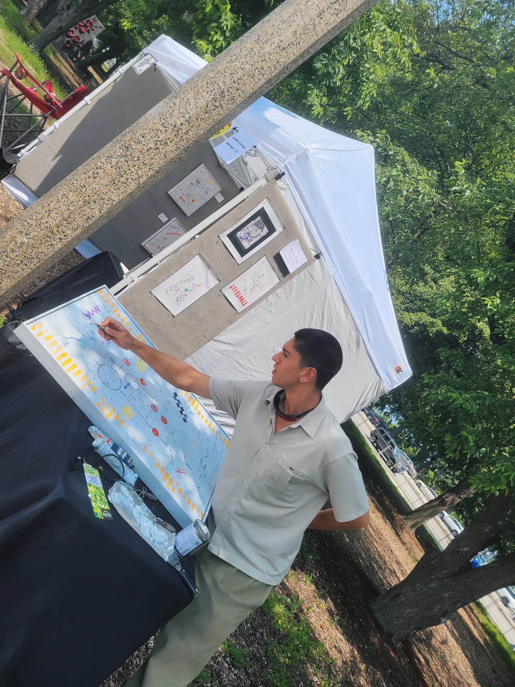

Selected work · Rotterdam
Order & disorder,
a delicate balance.
Sculptural surfaces shaped by raw material.
Works
01 — 09
About the artist
Material as an active force.
My practice investigates the delicate balance between order and disorder. Drawing from formative mentorship under Venezuelan painter Darío Basso at his atelier in Vigo, Spain, I treat raw matter—earth, sand, sawdust, gypsum, and charcoal—as active agents of unpredictability.
I introduce chaos into the composition, synthesizing these abrasive materials with the controlled boundaries of adhesives. Heavy accretions, fractures, and erratic charcoal trajectories create their own disruptive topographies.
Light, shadow, and the viewer’s reflection continuously reconstitute surfaces born from the intersection of structural intent and raw, unyielding chaos.
Klaus has Hispanic roots and works as a PhD researcher. Based in Noordereiland, Rotterdam.